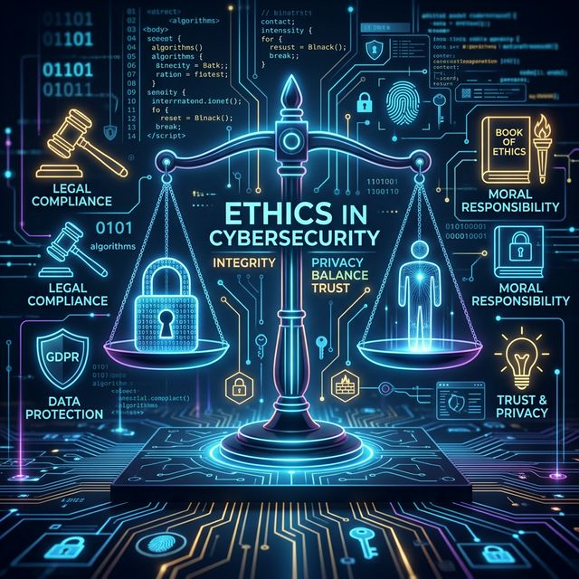

En la práctica de la seguridad informática, los límites entre la protección legítima y la invasión tecnológica son a menudo difusos. Esta actividad profundiza en el análisis ético de situaciones críticas, donde el profesional debe navegar entre su curiosidad técnica, sus obligaciones legales y su responsabilidad moral hacia los demás y hacia la organización.

Contexto / Caso Real: Trabajas en el área de ciberseguridad de una empresa. Durante una revisión de logs detectas que un compañero accedió a correos privados del director general sin autorización. El compañero argumenta que lo hizo para "detectar posibles fugas de información".
Dilema: Respeto a la privacidad vs. Intención de protección corporativa. El dilema ético consiste en decidir entre permitir o justificar una acción realizada con la intención de "proteger" a la empresa, o respetar la privacidad, la legalidad y las políticas internas de acceso a la información. Aunque la intención aparente era preventiva, el acceso violó principios fundamentales de confidencialidad, privacidad y autorización. El conflicto surge porque el empleado pudo actuar pensando en el beneficio de la organización, pero utilizó medios indebidos e ilegales para obtener información.
Análisis Profesional y Justificación desde Marcos Éticos: Se considera un acceso ilícito. Los marcos éticos sugieren que la virtud y las consecuencias colectivas negativas de romper la confianza invalidan la acción.
Acción Recomendada / Qué hacer como especialista: Reportar formalmente siguiendo los canales de Escalación establecidos. Específicamente:
Mandamientos de la Ética Informática afectados:
| Clasificación del Delito - Escenario 1 | |
|---|---|
| Tipo | Delito Informático |
| Justificación | Se utilizó un sistema informático para acceder indebidamente a información privada y protegida. Esto puede constituir acceso ilícito a sistemas o violación de privacidad digital. |
Contexto / Caso Real: Durante un pentest encuentras una vulnerabilidad crítica en un sistema financiero que permite extraer dinero. El cliente aún no ha firmado el contrato final y tú sabes que podrías explotarla sin ser detectado.
Dilema: Lucro personal vs. Responsabilidad social y profesional. El dilema consiste en decidir entre aprovechar una vulnerabilidad crítica para beneficio personal o profesional, o reportarla responsablemente aunque aún no exista contrato formal con el cliente. La vulnerabilidad permite extraer dinero del sistema financiero sin ser detectado. Mantener silencio o explotarla podría generar ganancias ilícitas, pero también daños económicos graves y consecuencias legales.
Análisis Profesional y Justificación desde Marcos Éticos: La honestidad y el "Bien Común" exigen el reporte inmediato. Ocultar la falla constituye un fraude informático potencial.
Acción Recomendada / Qué hacer como especialista: Notificación ética (Responsible Disclosure) al cliente. Específicamente:
Mandamientos de la Ética Informática afectados:
| Clasificación del Delito - Escenario 2 | |
|---|---|
| Tipo | Delito Informático |
| Justificación | La explotación de una vulnerabilidad financiera mediante sistemas digitales constituye fraude informático y acceso ilícito a sistemas. |
Contexto / Caso Real: Uso de datos públicos obtenidos de fuentes abiertas (OSINT) para ejercer presión y coaccionar o manipular psicológicamente a una persona sospechosa.
Dilema: Eficacia de la investigación vs. Dignidad humana. El dilema ético consiste en decidir entre usar información pública con fines legítimos de investigación o utilizarla para manipular psicológicamente a una persona sospechosa. Aunque la información fue obtenida de fuentes abiertas, el problema radica en el uso indebido de esos datos personales para ejercer presión.
Análisis Profesional y Justificación desde Marcos Éticos: El profesional debe rechazar tácticas de ingeniería social que crucen la línea del acoso o la intimidación ilegal.
Acción Recomendada / Qué hacer como especialista: Reorientar la investigación hacia métodos de recolección de evidencia legalmente válidos. Específicamente:
Mandamientos de la Ética Informática afectados:
| Clasificación del Delito - Escenario 3 | |
|---|---|
| Tipo | Delito Asistido por Computadora |
| Justificación | La computadora y herramientas OSINT se utilizan como medio para intimidar o manipular psicológicamente a una persona, aunque el objetivo principal no sea el sistema informático en sí. |
Aplicación de los principios universales de la ética informática (CEI) a los casos prácticos:
| Principios | Aplicación al Profesional | Observación Técnica |
|---|---|---|
| No dañar a otros | Evitar perjuicios psicológicos/económicos. | Prioridad en la integridad de las personas. |
| No hurgar archivos ajenos | Respeto absoluto a la privacidad de datos. | Limitarse a los activos autorizados explicitamente. |
| No usar recursos sin permiso | Legalidad en las pruebas de penetración. | Siempre contar con un RoE (Rules of Engagement). |
| Diseñar con sentido social | Consideración del impacto de las herramientas. | Evaluar consecuencias antes de ejecutar exploits. |
Como profesionales de CNO V, concluimos que la ética es el cortafuegos más importante en una red. No basta con saber cómo asegurar un sistema; debemos saber cuándo detenernos para proteger los derechos fundamentales de los usuarios. En entornos reales de seguridad informática, las decisiones no solo afectan la infraestructura técnica, sino la vida de las personas y la estabilidad jurídica de las empresas. Actuar con integridad asegura que nuestra labor sea constructiva y legal.
La ciberseguridad no solo requiere conocimientos técnicos, sino también criterios éticos sólidos. En los tres escenarios se observa que las acciones pueden justificarse aparentemente por razones de seguridad o investigación, pero aun así vulnerar derechos fundamentales y principios profesionales. Los marcos éticos permiten analizar las consecuencias, los derechos involucrados y el impacto social de cada decisión. Asimismo, los mandamientos de ética informática ayudan a establecer límites claros sobre el uso responsable de la tecnología. Un profesional de ciberseguridad debe actuar siempre bajo principios de legalidad, responsabilidad, privacidad y respeto a las personas, priorizando el bienestar colectivo y la integridad profesional antes que cualquier beneficio individual.